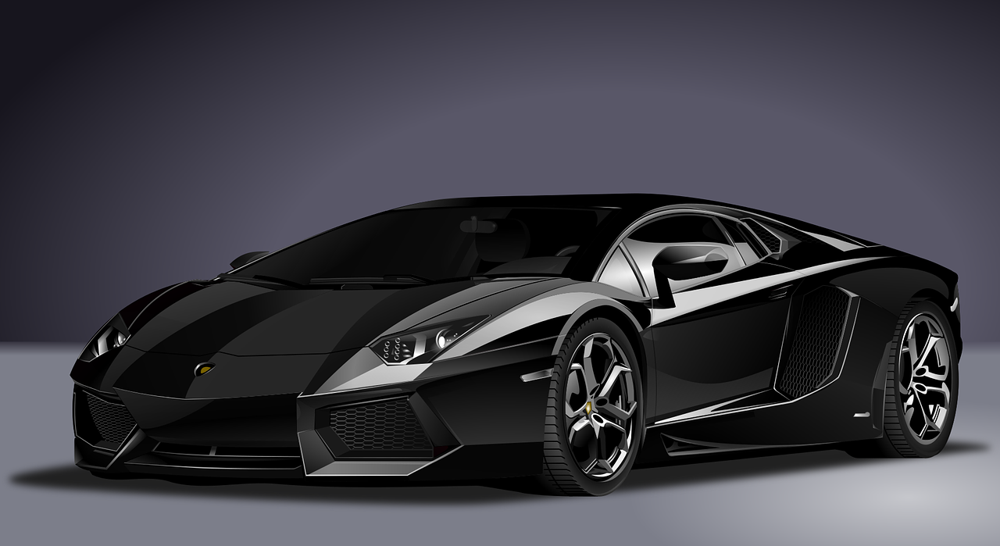
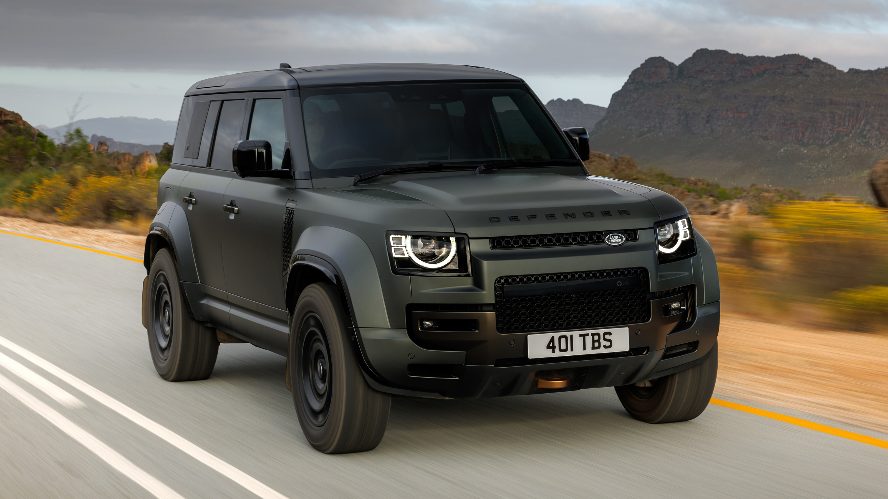

Lamborghini design is characterized by a bold, futuristic, and aggressive aesthetic, emphasizing sharp lines, hexagonal and Y-shaped elements, and a low, wide stance. The design philosophy focuses on balancing form and function, with a strong emphasis on aerodynamics and performance
Lamborghini

Porsche 911

Rolls royce

The Land Rover Defender is a rugged, go-anywhere SUV available in 90, 110, and 130 body styles, offering a blend of off-road capability and on-road comfort. It features a strong, stiff structure, advanced all-independent chassis, and Terrain Response systems for diverse driving conditions. The Defender boasts a range of engine options, including petrol and diesel, and is equipped with an 8-speed automatic transmission.
It features a strong, stiff structure, advanced all-independent chassis, and Terrain Response systems for diverse driving conditions. The Defender boasts a range of engine options, including petrol and diesel, and is equipped with an 8-speed automatic transmission.